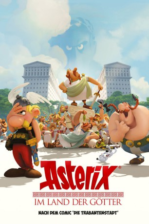

Alternativ: Asterix and Obelix: Mansion of the Gods (Englischer Titel) gesehen am 01.11.2015
gesehen am 01.11.2015
 
 IMDB-Wertung: 6.9 / 10
IMDB-Wertung: 6.9 / 10  Metascore:
Metascore: 
Schon lange sind die unnachgiebigen Gallier den Römern, allen voran Julius Caesar, ein Dorn im Auge. Da es bislang nicht möglich war, das gallische Völkchen mit militärischen Mitteln zu vertreiben, haben sich Caesar und seine Berater eine neue Idee einfallen lassen, mit der sie den widerspenstigen Galliern endlich beikommen wollen: Sie errichten eine Luxussiedlung unter dem Namen "Land der Götter" rund um das Dorf der Gallier und gliedern sie damit unfreiwillig in das Römische Imperium ein. Doch mal wieder haben die Römer die Rechnung ohne Asterix und Obelix gemacht. Wie gewohnt wissen die Gallier sich zu wehren und sabotieren die Bauarbeiten: Zuerst mit zaubertrankgetränkten, schnellwachsenden Eicheln und später mit Hilfe von Troubadix' Gesangskünsten...
Jahr: 2014
Dauer: 85 Minuten
FSK: 0
Land: Frankreich Studio: UFATonspuren:
Untertitel: Deutsch,
Auflösung: 1080p (1920x1080) Größe: 3184 MB
Genre: Animation/Trick, Abenteuer, Komödie, Familie
Regisseur: Louis Clichy, Alexandre Astier
Drehbuch: René Goscinny, Albert Uderzo, Alexandre Astier, Louis Clichy, Jean-Rémi François
Soundtrack: Philippe Rombi
Darsteller:
Datei: X:\Kinder Collections\Asterix\Asterix im Land der Götter (2014, FSKo.Al., 1920x1080) 3D.mkv seit 05.08.2015
Festplatte: Kinder-Filme+Trick
 Es gibt insgesamt 15 Filme in der Gruppe 'Kinder Collections\Asterix'
Es gibt insgesamt 15 Filme in der Gruppe 'Kinder Collections\Asterix'